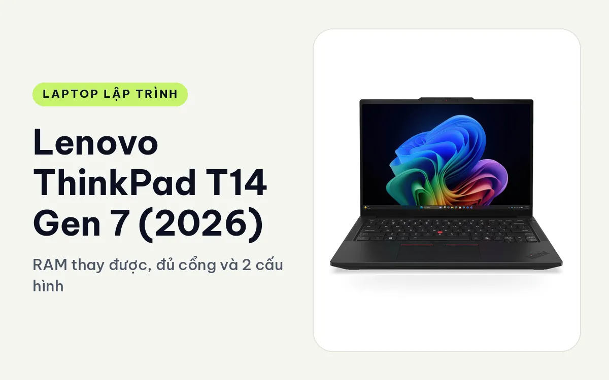
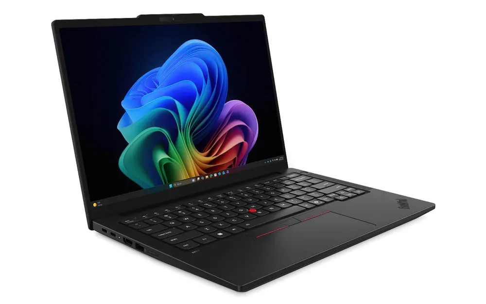
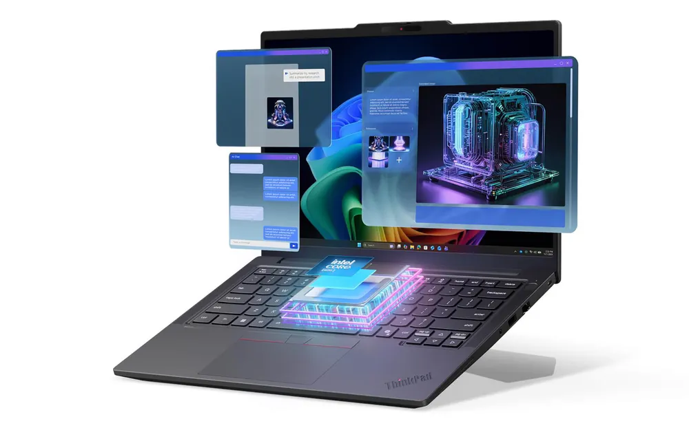
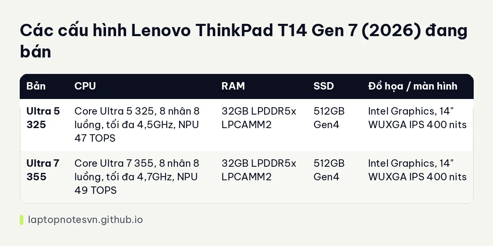

Lenovo ThinkPad T14 Gen 7 (2026) cho lập trình - RAM thay được, đủ cổng và 2 cấu hình

Lenovo ThinkPad T14 Gen 7 (2026) là máy 14 inch dành cho người cần một chiếc laptop làm việc bền, gọn và dễ bảo trì. Thế hệ này dùng chip Intel Core Ultra Series 3, RAM chuẩn LPCAMM2 và vẫn giữ nguyên cảm giác ThinkPad quen thuộc: vỏ nhám, góc vuông, bàn phím sâu.
Với dân code, điểm đáng nói nhất không nằm ở tốc độ chip mà ở chuyện RAM thay được và cổng mạng có dây. Hai thứ này hiếm thấy trên máy mỏng nhẹ cùng cỡ, và chúng quyết định máy dùng được bao lâu trước khi phải đổi.
Thiết kế của T14 Gen 7
Thân máy có kích thước khoảng 313,6 x 221,7 mm, dày từ 15,88 mm đến 21,95 mm tùy điểm đo. Lenovo dùng hợp kim tái chế cho khung, đạt chuẩn độ bền quân đội MIL-STD-810H. Máy có hai màu là Cosmic Blue và Eclipse Black, đều giữ vẻ nghiêm túc của dòng T.

Bàn phím có hành trình khoảng 1,5 mm, kèm núm TrackPoint đỏ và touchpad ba nút. Người quen gõ nhiều giờ trong editor sẽ thấy phím đàn hồi rõ, khác hẳn kiểu bàn phím phẳng của máy siêu mỏng. Có tùy chọn đèn nền bàn phím.
Về khả năng sửa chữa, hãng công bố điểm iFixit 10/10. Pin, quạt, bàn phím, SSD, cổng USB-C và cả module RAM LPCAMM2 đều thay được. Với máy phải chạy vài năm, đây là phần thiết kế có lợi nhất cho túi tiền.
Màn hình ở hai cấu hình đang bán là IPS WUXGA 1920 x 1200, 400 nits, chống chói, phủ 45% NTSC. Màu không rực nhưng đủ rõ cho chữ và terminal. Dòng này còn có tùy chọn OLED 2.8K, nhưng hai bản đang bán ở Hưng Phát chưa dùng tấm đó.
Mang đi hằng ngày
Máy nặng từ 1,29 kg, nằm trong nhóm nhẹ của máy 14 inch có đầy đủ cổng. Cầm lên không có cảm giác mỏng manh, nhét vào balo cùng sổ tay và củ sạc vẫn gọn.

Pin có hai tùy chọn 60Whr và 75Whr, sạc nhanh được khoảng 80% trong 60 phút nếu dùng đúng adapter 65W hoặc 100W. Dung lượng pin cụ thể ở từng cấu hình đang bán không ghi trong dữ liệu, nên anh chị nên hỏi cửa hàng trước khi chốt. Một ngày họp, viết code nhẹ và đọc tài liệu thì pin đủ dùng.
Cổng kết nối gồm Thunderbolt 4 và RJ45 Ethernet, kèm Wi-Fi 7. Cổng LAN thật sự hữu ích khi anh chị đi cài server, kéo image Docker nặng hoặc làm tại văn phòng khách chỉ có mạng dây.
Có mấy cấu hình
Hiện có 2 cấu hình. Cả hai cùng RAM 32GB LPDDR5x 7467MHz dạng LPCAMM2, SSD 512GB PCIe Gen4, đồ họa tích hợp Intel và màn WUXGA. Khác biệt chính nằm ở chip.

| Bản | CPU | RAM | SSD | Đồ họa / màn hình |
|---|---|---|---|---|
| Ultra 5 325 | Core Ultra 5 325, 8 nhân 8 luồng, tối đa 4,5GHz, NPU 47 TOPS | 32GB LPDDR5x LPCAMM2 | 512GB Gen4 | Intel Graphics, 14" WUXGA IPS 400 nits |
| Ultra 7 355 | Core Ultra 7 355, 8 nhân 8 luồng, tối đa 4,7GHz, NPU 49 TOPS | 32GB LPDDR5x LPCAMM2 | 512GB Gen4 | Intel Graphics, 14" WUXGA IPS 400 nits |
Bản Core Ultra 5 325
Đây là bản rẻ hơn, và với 32GB RAM thì nó đã dư sức cho web frontend, API Node hoặc Python, Laravel, Spring Boot ở quy mô dự án vừa. Một stack gồm vài container (database, cache, app) chạy thoải mái nhờ dung lượng RAM lớn.
Chip chỉ có 8 nhân 8 luồng và không có GPU rời, nên biên dịch C++ lớn hoặc build Android liên tục sẽ chậm hơn bản cao. Nếu việc hằng ngày là code, test và deploy thì khác biệt này ít khi thành vấn đề.
Bản Core Ultra 7 355
Bản này nhỉnh hơn một nấc về xung nhịp và NPU. Cấu hình khung vẫn y hệt, nên anh chị không có thêm nhân hay thêm RAM. Nó hợp với người hay chạy test suite dài, build Docker image nhiều lần trong ngày và muốn rút ngắn thời gian chờ một chút.
Lưu ý bản Ultra 7 đang bán ở dạng No Box, còn bản Ultra 5 là Full Box. Hai bản đều máy mới 100%, nhưng anh chị nên hỏi rõ phần phụ kiện đi kèm.
Nên chọn bản nào
Nếu ngân sách có hạn, bản Ultra 5 325 là lựa chọn hợp lý vì phần quan trọng nhất cho dân code, tức RAM 32GB, đã có sẵn ở cả hai bản. Cần thêm RAM sau này thì thay module LPCAMM2 lên tối đa 64GB, không phải đổi máy. Chỉ nên lên Ultra 7 355 khi anh chị chạy build và test dày đặc mỗi ngày.
Máy không có GPU rời, nên học máy với CUDA, dựng game 3D hoặc render nặng không phải đất của nó. Muốn so với đời trước, anh chị đọc bài ThinkPad T14 Gen 6 cho lập trình. Cần tính RAM cụ thể theo công việc thì xem lập trình viên cần bao nhiêu RAM.
Đăng ngày 08/11/2026